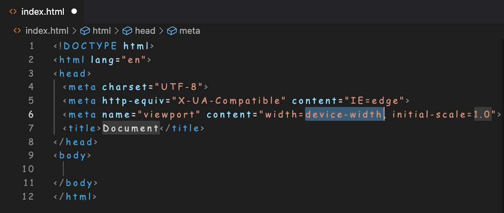

Дипломный проект
На тему: “Искусственный интеллект как инструмент менеджера проектов” Разработал студент Дятлов Павел Анатольевич
Введение
Содержание
Глава 1. Инициация и планирование
1.1 Определение целей и задач проекта
1.2 Оценка рисков и препятствий проекта.
1.3 Определение ресурсов и бюджета проект
1.4 Устав проекта
1.5 Выбор сервисов ИИ для реализации проекта
Глава 2 Реализация
2.1 Взаимодействие с сервисами ИИ.
2.2 Разработка и наполнение интернет-сайта
2.3 Логотип и выбор цветовой схемы сайта
2.4 Генерация изображений
2.5 Верстка сайта
2.6 Установка шрифта
2.7 Работа со стилями для «шапки» сайта для главной страницы и всех остальных страниц сайта
2.8 Создание зоны «подвала» сайта
2.9 Установка слайдера
2.10 Заголовок сайта
2.11 Ссылки картинки под слайдером
2.12 Создание страницы матрица рисков
2.13 Создание страницы с уставом проекта
2.14 Создание страницы план-график проекта
2.15 Создание страницы контакты
2.16 Создание страницы для размещения презентации
2.17 Размещения сайта на хостинге
2.18 Настройка почтовой формы
2.19 Адаптация страниц сайта под мобильные устройства
Превращение меню в кнопку «гамбургер» на мобильных устройствах
Заключение
Источники
Приложения
Введение
В этом дипломном проекте рассматривается возможность использования искусственного интеллекта (ИИ) как инструмента менеджера проектов. В настоящее время происходит бум связанный с возможностями ИИ, которые могут быть использованы в различных сферах, и сфера управления проектами не является исключением. Искусственный интеллект прочно входит в сферу управления проектами и предоставляет новые возможности для оптимизации процессов, улучшения принятия решений и повышения эффективности проектного менеджмента.
Вот несколько аспектов, которые делают мою тему актуальной:
Автоматизация и оптимизация процессов: ИИ может быть использован для автоматизации рутинных задач, таких как планирование, распределение ресурсов и мониторинг прогресса проектов. Это позволяет менеджерам проектов сосредотачиваться на стратегических аспектах и более сложных задачах.
Прогнозирование и аналитика: Алгоритмы машинного обучения могут предсказывать вероятные риски и тенденции в проекте на основе исторических данных, что помогает менеджерам принимать более обоснованные решения.
Улучшенное управление ресурсами: ИИ может помочь оптимизировать распределение ресурсов в проекте, учитывая ограничения, сроки и приоритеты, что позволяет сократить издержки и повысить эффективность.
Взаимодействие с пользователем: Искусственный интеллект способен общаться с пользователями проекта, например, через чат-боты или голосовые помощники, что упрощает коммуникацию и доступ к информации.
Продвинутые аналитические возможности: ИИ может обрабатывать большие объемы данных, анализировать тексты, изображения, аудио и видео, что позволяет извлекать ценную информацию или знания.
Новые технологические достижения: Постоянно появляются новые сервисы и библиотеки для работы с ИИ, что делает его более доступным и гибким для применения в различных сферах, включая управление проектами.
На основе практического опыта использования сервисов ИИ для создания интернет- сайта я хочу показать, какие возможности открывает этот новый инструмент для менеджера проектов, и как достигнуть результата даже в рамках ограничений временных, финансовых и трудовых ресурсов.
Глава 1. Инициация и планирование
1.1 Определение целей и задач проекта
Цель:
Создать сайт, используя в работе только бесплатные сервисы ИИ.
Задачи:
Узнать какие ИИ ассистенты доступны в настоящее время
Выбрать ИИ ассистентов для реализации проекта доступных на бесплатной основе
Изучить методы эффективного взаимодействия с ИИ ассистентами
Наполнить сайт контентом, используя только ИИ сервисы доступные на бесплатной основе
Реализовать проект силами сервисов ИИ, направляя их текстовыми инструкциями
1.2 Оценка рисков и препятствий проекта
Оценив возможные риски и препятствия которые могут повлиять на проект, я создал матрицу рисков рисунок 1.
Рисунок 1. Матрица рисков.
Проведя идентификацию проблемных факторов, и проанализировав их возможное негативное воздействие на проект я выработал план управления рисками проекта, опираясь на который я смогу принять действия по минимизации отрицательных последствий в случае наступления рисковых событий. Проводя постоянный мониторинг проекта, я надеюсь вовремя среагировать на уже выявленные риски или заметить возможность появления новых рисков и успеть выработать стратегию воздействия на вновь выявленные угрозы до их негативного влияния на проект. План управления рисками отражен на рисунке 2
Рисунок 2. План управления рисками проекта.
1.3 Определение ресурсов и бюджета проект
Для реализации я использовал только свое время и только бесплатные возможности искусственного интеллекта, бюджет моего проекта по созданию интернет-сайта равен нулю. Ресурсы проекта - это прежде всего мои временные затраты, поэтому я принял решение ежедневно выделять по полтора часа на свой проект с 4 мая 2023 по 3 августа 2023 года.
1.4 Устав проекта
Устав проекта — это документ, выпущенный̆ инициатором или спонсором проекта, который̆ формально авторизует существование проекта и предоставляет руководителю проекта полномочия использовать ресурсы организации в операциях проекта.[1]
Устав проекта "Искусственный интеллект как инструмент менеджера проектов" Цели проекта:
Создать интернет-сайт, используя в работе только бесплатные сервисы ИИ. Задачи проекта:
Узнать какие ИИ ассистенты доступны в настоящее время
Выбрать ИИ ассистентов для реализации проекта доступных на бесплатной основе
Изучить методы эффективного взаимодействия с ИИ ассистентами
Наполнить сайт контентом используя только ИИ сервисы доступные на бесплатной основе
Реализовать проект силами сервисов ИИ, направляя их текстовыми инструкциями. Ресурсы проекта:
Сервисы ИИ доступные на бесплатной основе
Мое время Бюджет проекта:
Бюджет проекта составляет 0 рублей, так как проект создается только с использованием бесплатных возможностей искусственного интеллекта.
График реализации проекта:
Определение целей и задач проекта: 2 дня (4-6 мая);
Оценка рисков и препятствий проекта: 1 день (7 мая);
Определение ресурсов и бюджета проекта: 1 день (8 мая);
Выбор сервисов ИИ для реализации проекта: 3 дня (9-12 мая);
Взаимодействие с сервисами ИИ: 7 дней (13-20 мая);
Разработка и наполнение интернет-сайта: 65 дней (21 мая-25 июля);
Адаптация и тестирование интернет-сайта: 3 дня (29 июля-25 августа);
Оформление материалов исследования в дипломную работ: 74 дня (21 мая-3 августа);. Стейкхолдеры:
Потенциальные пользователи интернет-сайта
Любые внешние поставщики сервисов искусственного интеллекта, которые могут быть использованы в проекте.
Риски проекта:
Матрица рисков: страница 6.
План работы с рисками: страница 7.
Ограничения проекта:
Ограниченное количество времени, которое может быть потрачено на изучение искусственного интеллекта и создание интернет-сайта;
Допущения проекта:
Доступность необходимых сервисов искусственного интеллекта;
Наличие необходимых знаний для создания интернет-сайта.
1.5 Выбор сервисов ИИ для реализации проекта
В настоящий момент сервисы активно внедряются в инструменты, которыми пользуются проектные менеджеры. ИИ доступны для менеджеров проектов на платформе Slack это Slack GPT.
Вот как прорекламировала Slack GPT Lidiane Jones (Генеральный директор Slack) 4 мая 2023 на выставке World Tour в Нью-Йорке : «Генеративный ИИ обладает огромным потенциалом для переопределения того, как выполняется работа. Реальная сила Slack GPT заключается в том, что он позволяет ИИ действовать на основе ценных данных из самого надежного ресурса компании: собственных внутренних знаний».[2]
В системе отслеживания ошибок Jira 19 апреля 2023 анонсировали появление виртуального товарища по команде Atlassian Intelligence[3]. На момент написания работы можно было присоединиться к списку ожидания Atlassian Intelligence, чтобы протестировать его в работе.[4]
Поставив себе ограничение выполнить проект в срок с бюджетом 0 рублей, командой для разработки сайта я выбрал разговорные ИИ доступные на бесплатной основе. Я решил собрать данные о действующих моделях разговорных ИИ. У меня получился такой список: ChatGPT - модель разговорного ИИ, позволяющая генерировать человекоподобные ответы на текстовые сообщения.
Google Bard - языковая модель, позволяющая генерировать стихи и другие творческие произведения.
HuggingChat - чат-бот с открытым исходным кодом, который можно обучать на собственных данных.
Zapier AI Chatbot – чат-бот, который можно использовать для автоматизации рабочих процессов и интеграции с другими приложениями.
Microsoft Bing AI - чат-бот, помогающий осуществлять поиск в Интернете.
Notion AI - это инструмент на базе искусственного интеллекта, который помогает автоматизировать рабочие процессы и более эффективно управлять задачами.
Perplexity - чат-бот, который может генерировать текст на основе введенного вами текста. YouChat - чат-бот, помогающий находить информацию по различным темам.
KoalaChat - чат-бот, помогающий находить товары и услуги в Интернете.
Jasper Chat - чат-бот, который поможет вам написать контент для вашего сайта или блога. Chat by Copy.ai - чат-бот, помогающий писать тексты для рекламы, электронных писем и т. д.
ChatSonic - чат-бот, который поможет создать разговорный опыт для вашего сайта или приложения.
ZenoChat - чат-бот, который поможет вам автоматизировать обслуживание и поддержку клиентов.
ChatSpot - чат-бот, который поможет вам генерировать лиды и продажи для вашего бизнеса. Tidio Chat - чат-бот, помогающий взаимодействовать с посетителями вашего сайта.
Zoho SalesIQ - чат-бот, позволяющий автоматизировать рабочие процессы продаж и поддержки.
Landbot - чат-бот, который поможет вам создавать разговорные целевые страницы и формы.
SimSimi – чат-бот с искусственным интеллектом, способный обучаться на основе взаимодействия с пользователями.
Как наиболее известный и имеющий наибольшее количество общедоступных примеров использования ChatGPT сразу был занесен в список инструментов. Далее в мои инструменты добавился Notion AI, поскольку в его описании на официальном сайте он рекомендовался как инструмент для проектов. И последний инструмент из разговорных ИИ это Microsoft Bing AI, оказалось этот помощник умеет анализировать многостраничные документы и выдавать краткое содержание открытого в браузере документа в формате pdf. Причем он может выдавать в зависимости от запроса краткое содержание любой информации, находящейся в документе. Выбор был сделан: ChatGPT+ Notion AI + Microsoft Bing AI. В качестве запасного игрока вместо ChatGPT и Notion AI я решил взять HuggingChat, поскольку основные игроки иногда могли быть не доступны из за наплыва пользователей.
Notion AI
Notion AI (https://www.notion.so) сервис искусственного интеллекта, встроенный в систему управления знаниями Notion. Сфера использования: оптимизации рабочих процессов проекта, генерация и работа с текстовой информацией, мозговой штурм, справочная информация.
В бесплатной/пробной версии имеет ограничение в 20 запросов. С одной стороны, это ограничение легко обойти, задав в том же аккаунте новое рабочее пространство, в котором вы получите еще 20 запросов. Но ограничение в 20 запросов означает то, что ваш ИИ ассистент помнит только информацию из 20 запросов и 20 ответов. Чтобы продолжать с ним дальнейшее прорабатывание темы вам придется сообщить-создать промпт, который будет содержать сведения об уже пройденных этапах заданных вопросов и полученных ответах. Ведь ваш новый ИИ ассистент, которого вы получите в новом рабочем пространстве, это ИИ ассистент дубликат, и этот дубликат не владеет информацией, которую вы получили и передали вашему первому ИИ ассистенту.
Lexica
Lexica (https://lexica.art) - это сервис ИИ, который может создавать изображения на основе текстового описания или загруженной пользователем фотографии.
Так же имеет ограничение на запросы в бесплатном использовании. Для полноценной работы необходимо запастись набором, мне хватило 4, почтовых ящиков. При работе с сервисом я не столкнулся с ограничениями по типу почтового ящика. Прекрасно подходили те почтовые сервисы, где не требуется номер телефона при создании email. Промпты для генерации картинок можно найти на главной странице сайта. Найдя через поиск по сайту картинки, соответствующие вашей тематике, нажав на изображение, можно получить информацию о том, какой промпт был использован при генерации изображения, и, используя комбинации из различных промптов, можно получить именно то, что вам нужно. За один раз по запросу генерируются четыре картинки, всего можно задать четыре запроса. Далее вам придется почистить историю браузера, удалив cookie и прочие данные сайтов, и, введя новый email, можно получить на него ссылку и опять получить четыре генерации по четыре изображения.
Сhat gpt
Сhat gpt (https://chat.openai.com/chat) - чат-бот с искусственным интеллектом, разработанный компанией OpenAI и способный работать в диалоговом режиме, поддерживающий запросы на естественных языках. Может быть использован для составления списков задач, облегчения совместной работы, повышения производительности, помощи в оптимизации процессов, получения кода для верстки сайта. Не имеет ограничений на запросы и позволяет задавать вопросы продолжения без ограничений, таким образом, можно проработать тему несколько дней и к ней всегда можно вернуться, даже если вы рассматривали другие вопросы, поскольку он хранит историю ваших запросов. На бесплатной основе доступна версия 3.5. Возможно получать код, не сложные таблицы и текстовую информацию. Иногда он бывает недоступен, но в основном его загруженность бывает с 12 до 19 по PST time, это мое личное наблюдение,
вероятно, его основные потребители взаимодействуют с ним как раз в это время.
Bing AI Chat
Bing AI – это новая функция поисковой системы Bing от Microsoft, использует ИИ для обеспечения лучших результатов поиска, более полных ответов и возможности генерировать контент.
Для этой работы я использовал Bing AI Chat в большей степени как аналитика информации для получения ее в сжатом виде. Требует VPN при использовании.
HuggingChat
Аналог Сhat gpt от компании Hugging Face. Может быть полезен для составления списков задач, облегчения совместной работы, повышения производительности, оказания помощи в оптимизации процессов, для получения кода для верстки сайта.
Я использовал этого ИИ ассистента в процессе работы над сайтом, но реже других.
Looka
Сервис на основе искусственного интеллект, который помогает сгенерировать логотип. Во время генерации логотипа мне были предложены палитры сочетаемости
цветов, позднее эти палитры я использовал для палитры цветов сайта, также в процессе работы с созданием логотипа, я получил доступ к значкам/иконкам для логотипа. Позднее я использовал эти значки/иконки для создания значков ссылок на создаваемом сайте.
Глава 2 Реализация
2.1 Взаимодействие с сервисами ИИ
В процессе работы с сервисам ИИ необходимо научится формулировать промпты.
Промпт — это текстовая инструкция или вопрос, которые пользователь задает сервисам ИИ, чтобы получить изображение, текст или код.
Поиск информации о текстовых инструкциях-промптах я решил начать c общей информации, изложенной для менее подготовленных пользователей, постепенно переходя к информации на специализированных источниках. Плавное погружение в незнакомую мне тематику позволяет мне лучше её структурировать для последующего использования.
Если ознакомиться с литературой, то становится понятным почему так много шумихи вокруг ИИ ассистентов: « Наиболее заметные достижения были достигнуты в так называемой «обработке естественного языка» (NLP), ветви ИИ, ориентированной на то, как компьютеры могут обрабатывать язык, как это делают люди».[5]
В статье «Может ли искусственный интеллект помочь вам написать следующую статью?» говорится, что ученый-компьютерщик Hafsteinn Einarsson из Университета Исландии в Рейкьявике использует ChatGPT для создания отзывов на аннотации своих работ. В одном из примеров, о котором Einarsson рассказал, что улучшения в ответах происходили при более детализированных запросах.[6]
В статье «ИИ-бот ChatGPT пишет умные эссе - стоит ли профессорам беспокоиться?» Chris Stokel-Walker прямо указывает на способности разговорных ИИ: «ChatGPT может создавать удивительно интеллектуально звучащий текст для различных задач, таких как написание статей, генерация кода, мозговой штурм идей» [7].
Хотя существуют и опасения по поводу возможных неточностей в сгенерированной информации, я надеюсь непрерывным тестированием получаемого кода свести их к
минимуму. По собственному признанию OpenAI, вывод ChatGPT может быть неправильным или предвзятым, например, цитирование ссылок на статьи, которых не существует.
Анализируя статью «ChatGPT: друг или враг?» я натолкнулся на интересующую меня информацию о том, что OpenAI установил ограждения, чтобы свести к минимуму риски, но пользователи нашли способы обойти их, и, поскольку выходные данные ChatGPT можно использовать для обучения будущих итераций модели, эти ошибки могут быть переработаны и усилены.[8] Кажется информация дана в негативном ключе, но я вижу в ней подсказку- « ..поскольку выходные данные ChatGPT можно использовать для обучения будущих итераций модели, эти ошибки могут быть переработаны и усилены.»
Именно благодаря этой подсказке я понял, что нужны примеры желаемого результата генерации и с каждой последующей генерацией, обученный на примере ИИ ассистент, будет выдавать переработанный улучшенный примером результат.
И только потом я обратился к инструкциям по промпт-инжинирингу (prompt ingineering) созданным для наиболее опробованного ИИ ассистента ChatGPT. Далее я решил продолжить знакомство с официальными руководствами от OpenAI по взаимодействию с их детищем, это были «Краткое руководство»[9], «Рекомендации по промпт-инжинирингу с помощью Openal API»[10], и страница примеров[11].
Как работает промпт-инжиниринг. Правила и примеры
Используйте новейшую модель
Помещайте инструкции в начало подсказки и используйте ### или "" для разделения инструкции и контекста
Будьте конкретны, описательны и максимально подробны в отношении желаемого контекста, результата, длины, формата, стиля и т.д.
Сформулируйте желаемый формат вывода на примерах (пример 1, пример 2).
Начните с нулевого снимка, затем с нескольких примеров, если ни один из них не сработал, начните заново изменив примеры.
Сократить "пространные" и неточные описания.
Вместо того чтобы просто говорить, чего не следует делать, скажите, что следует делать.
Специфика генерации кода - используйте "ключевые слова", чтобы подтолкнуть модель к определенному шаблону.
Несмотря на то, что эти описания предназначены для разработчиков в них много полезной информации, отраженной в пунктах с 3 по 7 и от части можно использовать "ключевые слова", если эти ключевые слова ввести в лексикон (придать термину значение, указав на это).
Следующий материал с которым, я ознакомился была работа под названием «Дерево мыслей: Преднамеренное решение проблем с помощью больших языковых моделей»[12] У авторов есть новый способ использовать языковые модели для решения задач. Они называют это Древом мыслей (ТоТ). Это способ позволяет языковым моделям продумать различные шаги и варианты, прежде чем выдать окончательный ответ.
Использование ToT при запросе помогает языковым моделям делать правильный выбор, позволяя им сравнивать различные варианты и видеть, как они работают. Они также могут передумать и попробовать что-то другое, если застрянут или совершат ошибку - это означает, что они могут вернуться назад и начать новую итерацию (выбор токиенов).
Идея ToT была вдохновлена коллективным решением проблем несколькими людьми и внутренним диалогом человека, когда он выступает одновременно в двух ролях, являясь самому себе оппонентом. Авторы приводят в пример два режима мышления: быстрый, автоматический, и медленный, осторожный. Люди также могут искать наилучшее решение, пробуя разные вещи и используя правила или советы. Применяя ТоТ вы будете пытается заставить языковые модели делать тоже самое. На рисунке 3 показано отличие метода
«Древо мыслей» (ToT) от других методов «Ввод вывод» (IO), «Подсказка по цепочке рассуждений» (СоТ), «Самосогласованность и Подсказка по цепочке рассуждений» (self consistency with CoT).
Рисунок 3. Отличие метода «Древо мыслей» от других методов запросов.
Преимущество использования метода заключено в создании условий при которых ИИ ассистент выступает в трех ролях, сам себе являясь и оппонентом и советчиком, охватывая более широкий набор токиенов и сам себя ограничивая перетасовывает их таким образом, при котором находит наиболее ценный набор токиенов, составляющих ответ.
Дэйв Халберт основываясь концепции ТоТ предложил Tree-of-Thought Prompting, в качестве простой техники подсказок, заставляя LLM оценивать промежуточные мысли в одной подсказке.
Промпт: Представь, что на этот вопрос отвечают три разных эксперта. Все эксперты запишут 1 шаг своих рассуждений, затем поделятся им с группой. Затем все эксперты переходят к следующему шагу и т.д.
Если кто-то из экспертов понимает, что он не прав, то он уходит. Вопрос заключается в следующем [13]
Другие методы запросов представленных на рисунке 3:
«Ввод вывод» (IO) – Самый простой метод взаимодействия запрос ответ.
Промпт: патристика это
Сгенерированный ответ: Термин, обозначающий совокупность теологических, философских и политико-социологических доктрин христианских мыслителей II-VIII вв.
Подсказка по цепочке мыслей» (СоТ) – позволяют создавать сложные рассуждения с помощью промежуточных шагов.[14]
Промт с примером логики решения: У Роджера есть 5 теннисных мячей. Он покупает еще 2 банки теннисных мячей теннисных мячей. В каждой банке по 3 теннисных мяча. Сколько теннисных мячей у него теперь есть?
Ответ: Роджер имел 5 мячей. В 2 банках по 3 теннисных мяча в каждой - 6 теннисных мячей. 5 + 6 = 11. Ответ: 11.
Ответь на вопрос: В кафетерии было 23 яблока. Если для приготовления обеда использовали 20 и купили еще 6, то сколько яблок у них осталось?
Сгенерированный ответ: Роджер имел 5 мячей. 2 банки по 3 теннисных мяча в каждой - 6 теннисных мячей. 5 + 6 = 11. Ответ: 11.
Самосогласованность и Подсказка по цепочке рассуждений (self consistency with CoT) – Самосогласованность, усовершенствованный метод разработки подсказок направлен на повышение эффективности подсказок по цепочке рассуждений (CoT), особенно для задач, связанных с арифметикой и рассуждениями на основе здравого смысла. Самосогласованность пробует множество различных путей рассуждения с помощью CoT с несколькими вариантами, а затем выбирает наиболее согласованный ответ из сгенерированных.[15]
Промт с примерами логики решения:
Вопрос: В роще 15 деревьев. Работники рощи сегодня посадят деревья в роще. После того, как посадки будут закончены, здесь будет 21 дерево. Сколько деревьев посадили сегодня работники рощи?
Ответ: Мы имели 15 деревьев. Позже у нас будет 21 дерево. Разница, должна быть, в количестве деревьев, которые работники посадили. Итак, они, должны были, посадить 21 - 15 = 6 деревьев. Ответ:6.
Вопрос: Если на стоянке 3 машины и приехали еще 2 машины, сколько машин находится на стоянке?
Ответ: На стоянке уже есть 3 машины. Прибыли еще 2. Теперь есть 3 + 2 = 5 машин. Ответ: 5.
Вопрос: У Лии было 32 шоколадных конфеты, а у ее сестры 42. Если они съели 35 конфет, то сколько всего конфет у них осталось?
Ответ: У Лии было 32 шоколадных конфеты, а у сестры Лии 42. Это означает, что изначально было 32 + 42 = 74 шоколадных конфеты. 35 из них были съедены. Таким образом, в общей сложности у них осталось 74 - 35 = 39 шоколадных конфет. Ответ: 39.
Вопрос: У Джейсона было 20 леденцов на палочке. Он дал Дэнни несколько леденцов на палочке. Теперь у Джейсона есть 12 леденцов на палочке. Сколько леденцов Джейсон дал Денни?
Ответ: Джейсон имел 20 леденцов на палочке. Поскольку сейчас у него их только 12, он, должно быть, отдал остальное Дэнни. Количество леденцов, которые он дал Дэнни, должно было составлять 20 - 12 = 8 леденцов на палочке. Ответ: 8.
Вопрос: У Шона есть пять игрушек. На Рождество он получил по две игрушки от своих мамы и папы. Сколько у него сейчас игрушек?
Ответ: У него есть 5 игрушек. Он получил 2 игрушки от мамы, так что после этого у него осталось 5 + 2 = 7 игрушек. Затем он получил еще 2 игрушки от папы, так что в общей сложности у него 7 + 2 = 9 игрушек. Ответ: 9.
Вопрос: В серверной комнате было девять компьютеров. Каждый день, с понедельника по четверг, устанавливалось еще пять компьютеров. Сколько компьютеров сейчас находится в серверной?
Ответ: Есть 4 дня с понедельника по четверг. Каждый день добавлялось по 5 компьютеров. Это означает, что в общей сложности было добавлено 4 * 5 = 20 компьютеров. Вначале было 9 компьютеров, так что теперь их 9 + 20 = 29 компьютеров. Ответ: 29.
Вопрос: У Майкла было 58 мячей для гольфа. Во вторник он потерял 23 мяча для гольфа. В среду он потерял еще 2 очка. Сколько мячей для гольфа было у него в конце среды?
Ответ: Изначально у Майкла было 58 мячей. Во вторник он потерял 23 мяча, так что после этого у него 58 - 23 = 35 мячей. В среду он потерял еще 2, так что теперь у него 35 - 2 = 33 мяча. Ответ: 33.
Вопрос: У Оливии есть 23 доллара. Она купила пять рогаликов по 3 доллара каждый. Сколько у нее осталось денег?
Ответ: Она купила 5 рогаликов по 3 доллара каждый. Это означает, что она потратила 5 * 3 = 15 долларов. Оливия имела 23 доллара, так что у нее осталось 23 - 15 = 8 долларов.
Ответ: 8 долларов.
Ответь: Когда мне было 6 лет, моя сестра была вдвое моложе меня. Сейчас мне 70, сколько лет моей сестре?
Сгенерированный ответ:
Пример декодирования с различными путями рассуждения:
Результат 1:
Когда мне было 6 лет, моя сестра была вдвое моложе меня, значит, ей было 3. Сейчас мне
70, значит, ей 70 - 3 = 67. Ответ: 67.
Результат 2:
Когда рассказчику было 6 лет, его сестра была вдвое моложе его, то есть на 3. Теперь, когда рассказчику 70, его сестре было бы 70 - 3 = 67 лет. Ответ: 67.
Результат 3:
Когда мне было 6 лет, моя сестра была вдвое моложе меня, значит, ей было 3. Сейчас мне
70, значит, ей 70/2 = 35. Ответ: 35.
Большинство голосов за ответ: 67. Который является правильным.[16]
В завершении темы обзора источников, которые послужили созданием для меня базовых знаний для применения на практике, была сессия «Состояние GPT | BRK216HFS», подготовленная для мероприятия Microsoft Build 2023 на которой спикером был Andrej Karpathy один из создателей OpenAI. В первой части он рассказал о том, как они обучают ассистентов GPT, а во второй части он рассказал как можно эффективно использовать ассистентов GPT для приложений.[17].
2.2 Разработка и наполнение интернет-сайта
Промпты, которые я привожу в пример, могут быть не первой генерации, а продолжением диалога с ИИ ассистентом уже обученном на примерах, и ассистент
воспринимает их как продолжение взаимодействия, поэтому такой же промпт, введенный в самом начале взаимодействия, будет иметь совершенно другую генерацию ответа.
Для удобства восприятия я изменил оформление текста запросов и ответов:
текст промпта выделен курсивом;
текст ответа окрашен в синий цвет.
2.3 Логотип и выбор цветовой схемы сайта
Промпт: Напиши мне список сервисов на основе ИИ где мне могут нарисовать логотип бесплатно.
Сгенерированный ответ:
Вот несколько сайтов, которые могут помочь вам создать логотип с помощью ИИ бесплатно: Looka
LogoAI FreeLogoDesign BrandMark Hatchful Renderforest
Вы можете выбрать любой из них и создать свой логотип бесплатно.
Я начал с первого в списке Looka (https://looka.com/). Главная страница предлагает ввести название компании(AI as a PM tool) → далее мы выбираем свою отрасль (project management) → далее выбираем дизайн нескольких понравившихся логотипов из списка
→ далее выбираем понравившиеся цвета из списка → далее мы можем опять ввести название компании (вводили на первом шаге) или поменять его и добавить слоган → далее мы можем выбрать до пяти символов (значков) в зависимости от отрасли (отрасли можно вводить в окно поиска и ,если для введенной в поиск отрасли существуют значки, их можно выбрать). Я выбрал project management и значки изображенные на рисунке 4.
Рисунок 4. Выбранные значки из отрасли project management.
Затем выбрал отрасль management и добавил один значок рисунок 5.
Рисунок 5. Значек из отрасли management.
Затем добавил еще один значок из отрасли plan рисунок 6.
Рисунок 6. Значек из отрасли plan.
→ далее я получил список логотипов, выбрал понравившийся для его персонализации
→ далее на странице персонализации можно изменить текст, его цвет и размер, цвет заднего фона, поменять значок (логотип) и его цвет. Также менять цвета текста и заднего фона, можно прямо на этой странице, получить палитру сочетаемости цветов с их номерами, и использовать эти цвета для будущего сайта рисунок 7.
Цветовая схема сайта

Рисунок 7. Цветовая палитра сайта.
→ далее необходимо поменять фон на белый цвет #FFFFFF, а текст и лого на черный цвет #000000 → далее используя инструмент увеличения в браузере, на mac сочетание Cmd + (плюс) на windows Ctrl + (плюс) . Я смог максимально увеличить до 300%. → далее необходимо сделать снимок выделенной области (область с увеличенным логотипом). Это позволит сохранить сгенерированный искусственным интеллектом логотип бесплатно. → далее я открыл полученный логотип в CorelDRAW. Благодаря высокой контрастности между белым и черным полученное изображение легко трассировать для перевода изображения из растрового формата в векторный. → далее в векторе я слегка изменил логотип повернув треугольник из стрелок на 45 градусов против часовой и добавив в него начальные буквы слов В(время), Д(деньги), Т(требования), а в центре помести К(качество), применил инструмент «интеллектуальная заливка» для того, чтобы буквы Т, В и Д стали пустотами, удалил все лишнее, окрасил логотип в белый цвет, выделил его и сохранил выделенную часть в формате svg. Файл сохранил в кривых для лучшей масштабируемости логотипа.
2.4 Генерация изображений
Промпт: Напиши мне список сервисов на основе ИИ где мне могут сгенерировать изображение бесплатно.
Сгенерированный ответ:
Вот список сервисов на основе ИИ, где вы можете сгенерировать изображение бесплатно: DALL-E 2
Lexica NightCafe
Deep Dream Generator
Надеюсь это поможет вам.
Я начал проверять список и остановил свой выбор на ИИ Lexica (https://lexica.art/).
Промпт: A man in a suit talk with a robot with a computer. Сгенерированное изображение рисунок 8 смотри в приложениях.
Промпт: a group of white programmers. Сгенерированное изображение рисунок 9 смотри в приложениях.
Промпт: High resolution human fashion robot working on a computer. Сгенерированное изображение рисунок 10 смотри в приложениях.
Промпт: neural network like a human. Сгенерированное изображение рисунок 11 в приложениях.
При бесплатной генерации изображений в горизонтальной ориентации доступны в разрешении 1152 x 768, для современных мониторов этого явно не достаточно, поэтому требуется использовать дополнительный сервисc ИИ для увеличения изображений.
Промпт: Напиши мне список сервисов на основе ИИ где мне могут увеличить разрешение изображения бесплатно.
Сгенерированный ответ:
Вот список сервисов на основе ИИ, где вы можете увеличить изображение бесплатно: AI Image Enlarger,
Image Upscaler Online
Бесплатный онлайн-увеличитель изображений
Для увличения загруженных изображений я использовал сервис AI Image Enlarger( https://imglarger.com).
2.5 Верстка сайта
Промпт: в каком приложении доступном бесплатно на компьютере мак мне лучше всего сверстать сайт? Добавь в ответ ссылку на скачивание.
Сгенерированный ответ:
Если вы используете компьютер Mac, рекомендуется использовать бесплатный инструмент для разработки веб-сайтов - Visual Studio Code. Он обладает множеством возможностей для верстки сайта, таких как подсветка синтаксиса, автодополнение и многое другое. Скачайте Visual Studio Code бесплатно здесь и начинайте создавать свой сайт прямо сейчас!
Ссылка (https://code.visualstudio.com/download) корректная и действительно ведет на страницу загрузки версий для различных операционных систем.
Я инсталлировал приложение ранее, и приложение действительно бесплатное. Совет полностью релевантный.
Промпт: я инсталлировал приложение Visual Studio Code, что делать дальше для создания сайта?
Сгенерированный ответ:
После установки Visual Studio Code вы можете начать создавать свой сайт. Вот несколько шагов, которые нужно выполнить:
Создайте папку для вашего проекта.
Внутри папки создайте папки с названиями images, css и js, если планируете использовать
JavaScript.
Откройте Visual Studio Code и выберите File -> Open Folder.
Создайте файл index.html внутри папки проекта,
Наберите символ ! восклицательный знак внутри файла index.html и нажмите Enter, для развертывания начального кода вашей страницы.
Теперь вы можете писать код для вашего сайта.
Чтобы узнать больше о том, как создавать веб-сайты с помощью Visual Studio Code, вы можете посмотреть официальную документацию на сайте Visual Studio Code.
Следуя полученному алгоритму открываю Visual Studio Code выбираю папку с проектом и создаю файл index.html, ввожу символ ! восклицательный знак и нажимаю ввод. Получаю следующий код рисунок 12:

Рисунок 12. Код из приложения Visual Studio Code.
Промпт: Продолжаем. Я получил следующий код:
<!DOCTYPE html >
<html lang="en">
<head>
<meta charset="UTF-8">
<meta http-equiv="X-UA-Compatible" content="IE=edge">
<meta name="viewport" content="width=device-width, initial-scale=1.0" >
<title>Document</title>
</head>
</body>
</head>
</html>
В какой части полученного кода мне дальше верстать сайт?
Сгенерированный ответ:
После получения этого кода вам необходимо создать все необходимые теги HTML для создания вашего сайта внутри тела <body>.
Примеры тегов, которые вы можете использовать, включают в себя <header>, <nav>,
<section>, <article>, <footer> и другие. Вы также можете использовать теги для создания списков, таблиц, изображений и других элементов. Например, вы можете начать с создания заголовка сайта с помощью тега <h1>:
<body>
<header>
<h1>Заголовок вашего сайта</h1>
</header>
</body>
Затем вы можете создать навигационное меню с помощью тега <nav>:
<body>
<header>
<h1>Заголовок вашего сайта</h1>
<nav>
<ul>
<li><a href="#">Ссылка 1</a></li>
<li><a href="#">Ссылка 2</a></li>
<li><a href="#">Ссылка 3</a></li>
</ul>
</nav>
</header>
</body>
Продолжайте добавлять теги HTML, чтобы создать ваш сайт. Не забудьте использовать CSS,
чтобы стилизовать ваш сайт и сделать его более привлекательным для пользователей.
Промпт: Построй мне типовую структуру страницы сайта в виде блоков.
Сгенерированный ответ:
Внутри блока wrapper находятся три блока, сверху header в середине main и внизу footer. wrapper
├── header
├── main
└── footer
Промпт: продолжай, теперь напиши мне эту структуру в виде кода для страницы
index.html
Сгенерированный ответ:
<!DOCTYPE html>
<html>
<head>
<title>My Website</title>
</head>
<body>
<div class="wrapper">
<header class="header">
<!-- Header content goes here –>
</header>
<main class="main">
<!-- Main content goes here –>
</main>
<footer class="footer">
<!-- Footer content goes here -->
</footer>
</div>
</body>
</html>
Промпт: Продолжаем дальше, теперь ты верстальщик и будешь писать код на основе проанализированного примера. Заполни блок header для создания меню в 5 пунктов и размещения там векторного логотипа, фон #5aa69d, цвет ссылок в меню #ffffff, ширина шрифта 700, ссылки в меню должны быть написаны заглавными буквами, другие стили используй из проанализированного примера. Добавь к стилям комментарий. Пиши код. Место вставки пути к логотипу замени словами: путь_к_вашему_векторному_логотипу.svg
Сгенерированный ответ:
<header>
<div class="container">
<div class="header inner">
<a class="logo" href="#">
<img class="logo img" src="путь_к_вашему_векторному_логотипу.svg" alt="">
</a>
<nav class="menu">
<ul class="menu list">
<li class="menu list-item">
<a class="menu list-link" href="#">Пункт 1</a>
</li>
<li class="menu list-item">
<a class="menu list-link" href="#">Пункт 2</a>
</li>
<li class="menu list-item">
<a class="menu list-link" href="#">Пункт 3</a>
</li>
<li class="menu list-item">
<a class="menu list-link" href="#">Пункт 4</a>
</li>
<li class="menu list-item">
<a class="menu list-link" href="#">Пункт 5</a>
</li>
</ul>
</nav>
</div>
</div>
</header>
/* CSS стили для страницы */ html{
box-sizing: border-box;
}
*, *::after, *::before{ box-sizing: inherit; margin: 0;
padding: 0;
}
/*Удаляет стили для ul*/ ul{
list-style-type: none;
}
/*Отключает декорацию ссылок */ a{
text-decoration: none;
/*Задает родительский цвет */ color: inherit;
}
/* CSS стили для заголовка */
.container {
background-color: #5aa69d; max-width: 1220px;
margin: 0 auto;
padding: 0 10px;
}
.header {
background-color: #5aa69d;
}
.header inner { padding-top: 40px; padding-bottom: 45px; display: flex;
justify-content: space-between; align-items: flex-end;
}
/* CSS стили для меню */
.menu list{ display: flex; gap: 35px;
}
.menu list-link{ color: #ffffff;
text-transform: uppercase; font-weight: 700;
}
Добавляю полученный код, заменяю Пункт 1 на настоящее название меню, проделываю это для всех пяти пунктов меню и соединяю с логотипом из папки images, созданную ранее по совету искусственного интеллекта вместе с папками css(для стилей) и js(для JavaScript).
Промпт: Как назвать файл стилей в папке css.
Сгенерированный ответ:
Название файла стилей в папке css может быть любым, но обычно используют название
style.css.
Промпт: Как подключить файл стилей style.css к файлу index.html. Укажи конкретное место где прописывается код. Вставь в код в этом месте слово ПРИВЕТ. Используй код который я дал тебе проанализировать в прошлом запросе.
Сгенерированный ответ:
Для подключения файла стилей style.css к файлу index.html необходимо использовать тег
<link> внутри тега <head>:
<!DOCTYPE html >
<html lang="en">
<head>
<meta charset="UTF-8">
<meta http-equiv="X-UA-Compatible" content="IE=edge">
<meta name="viewport" content="width=device-width, initial-scale=1.0" >
<title>Document</title>
<link rel="stylesheet" href="ПРИВЕТ" >
</head>
Прописываю путь в href, связывая с файлом стилей style.css находящимся в папке css
и получаю:
<link rel="stylesheet" href="css/style.css">
2.6 Установка шрифта
Промпт: Продолжаем. Мне нужно добавить шрифт Open Sans, ширина шрифта 400 и 700, размер16px, высота строки 1.3 из коллекции свободных для использования шрифтов Google. Для применения шрифта Open Sans ко всему сайту напиши мне код и укажи куда мне его вставить в файлы index.html и style.css.
Сгенерированный ответ:
Для добавления шрифта Open Sans нужно использовать следующий код внутри тега
<head> в файле index.html:
link rel="preconnect" href="https://fonts.googleapis.com" />
<link rel="preconnect" href="https://fonts.gstatic.com" crossorigin />
<link href="https://fonts.googleapis.com/css2?family=Open+Sans:wght@400;700&display=swap" rel="stylesheet" />
В файле style.css нужно добавить следующий код, чтобы применить шрифт к всему сайту:
html, body{
min-height: 100%;
font-family: 'Open Sans', sans-serif; font-size: 16px;
font-weight: 400;
font-weight: 700;
line-height: 1.3
}
Этот код устанавливает шрифт Open Sans шириной 400 и 700 и размером 16 пикселей для всего тела документа. Вам нужно выбрать одно значение 400 или 700.
2.7 Работа со стилями для «шапки» сайта для главной страницы и всех остальных страниц сайта
Промпт: Продолжай. Все страницы кроме главной будут иметь заливку фона в области header, но на главной странице я хочу разместить слайдер и там мне нужен прозрачный фон в области header. Файл style.css применяет стили ко всем страницам моего сайта. Как мне задать настройки стилей в файле style.css чтобы сделать фон в области header на главной странице прозрачным, а на всех остальных заливкой цветом background- color: #5aa69d.
Сгенерированный ответ:
Чтобы сделать фон в области header прозрачным на главной странице, а на всех остальных с заливкой цветом #5aa69d в области header, нужно добавить следующий код в файл style.css:
.header{
background-color: #5aa69d;
/* заданный цвет фона для всех страниц */
}
.header-main{
background-color: transparent;
/* заданный цвет фона для главной страницы */
}
Здесь .header-main - это селектор для главной страницы. Если у вас другой селектор для главной страницы, замените .header-main на нужный вам селектор.
На главой странице index.html вам нужно изменить код :
<header class="header">
Заменить на
<header class="header header-main"> .
На остальных страницах изменений не требуется.
Я создал код стиля в файле style.css и на время задокументировал его /*.header- main{background-color: transparent;} /* чтобы фон не становился прозрачным до того момента пока я не начну тиражировать страницы. На этапе тиражирования я заменю
<header class="header"> на <header class="header header-main"> в файле index.html.
Такой вид верхнего меню будет на десктопах для всех страниц кроме главной, он представлен на рисунке 13.
Рисунок 13. Вид верхнего меню.
2.8 Создание зоны «подвала» сайта
Промпт: Используй пример из подсказки для стилей. Мне необходимо заполнить блок footer, фон #5aa69d, цвет текста #ffffff, ширина шрифта 400 . Для создания ссылок в меню из 3 пунктов создай раздел "footer menu", размер шрифта 15px, ширина шрифта 700. Под меню добавь раздел “footer copyright” с подразделом “footer copyright-text“ для текстовой информации. Для раздела “footer copyright”, размер шрифта 12px, шрифт расположи по центру, ограничь ширину блока 800px. Напиши мне код.
Сгенерированный ответ:
<footer class="footer">
<div class="container">
<nav class="footer menu">
<ul class="footer menu-list">
<li class="footer menu-item">
<a class="footer menu-link" href="#"> Пункт 1</a>
</li>
</ul>
<ul class="footer menu-list">
<li class="footer menu-item">
<a class="footer menu-link" href="#"> Пункт 2</a>
</li>
</ul>
<ul class="footer menu-list">
<li class="footer menu-item">
<a class="footer menu-link" href="#"> Пункт 3</a>
</li>
</ul>
</nav>
</div>
<div class="footer copyright">
<p class="footer copyright-text">
© 2021 Все права защищены.
</p>
</div>
</footer>
/* CSS стили */
.footer{
background-color:#5aa69d; text-transform: none; padding: 50px 0 32px; color: #ffffff;
font-weight: 400;
}
.footer__menu{ display: flex;
justify-content: space-around; margin-bottom: 0;
font-size: 15px; font-weight: 700;
}
.footer__copyright{ max-width: 800px; margin: 0;
text-align: center;
font-size: 12px;
}
После ввода стилей пришлось изменять значения в .footer menu для margin-
bottom: 0; поскольку 0 при нулевом значении текст почти в плотную примыкал к меню, прибавляя по 10 пикселей остановился на 50px, поскольку результат меня устроил. Такую же процедуру провел со стилями в .footer copyright для margin: 0; первое значение отступ сверху оставил равной 0, второе значение отступы слева и справа поставил автоматическим, а третье значение отступ снизу cделал равным 30px. Добавил название пунктов меню и текст в раздел footer copyright-text: Интернет-сайт создан в рамках дипломного проекта. Для создания сайта в качестве инструментария менеджера проектов использованы только бесплатные сервисы искусственного интеллекта. Команда проекта: PM + AI. Бюджет проекта 0 рублей. Проект осуществил Дятлов Павел. 2023год.
Промпт: Допиши код дальше. Для написанного ранее тобой примера кода мне необходимо раздел footer прикрепить к низу страницы. Как мне это сделать? Напиши код стилей для файла style.css и укажи куда его вставить.
Сгенерированный ответ:
Раздел footer будет прижат к низу страницы, если использовать следующий CSS-код в файле style.css:
html, body { height: 100%;
}
.wrapper {
min-height: 100%; display: flex;
flex-direction: column;
}
.main{
flex-grow: <установите ваше значение>;
}
Значение flex-grow определяет, как элементы будут растягиваться внутри контейнера, когда есть свободное пространство.
Обратите внимание, чтобы этот код работал нужно соответствие HTML-кода в вашем файле
index.html написанному ранее примеру.
Промпт: какое обычно значение применяют к flex-grow?
Сгенерированный ответ:
По умолчанию значение flex-grow равно 0, что означает, что гибкий элемент не будет расти, заполняя свободное пространство в гибком контейнере. Значение flex-grow определяет, насколько сильно должен расти гибкий элемент относительно других гибких элементов в контейнере. Обычное значение flex-grow равно 1, что означает, что гибкий элемент будет расти, заполняя оставшееся пространство в контейнере после изменения размеров всех остальных гибких элементов. Однако конкретное значение, используемое для flex-grow, зависит от макета и дизайна страницы.
Добавив полученный код в файл style.css и применив в main к flex-grow значение 1 получил следующий вид страницы, с верхним и нижним меню, он представлен на рисунке 14 в приложениях.
Далее я растиражировал полученные страницы, потому что для всех страниц кроме главной index.html будут одинаковые верхнее и нижнее меню, а различаться страницы будут только наполнением. Я заменил <header class="header"> на <header class="header header-main"> в файле index.html. и раздокументировал .header-main{background-color: transparent;} на главной странице. Фон верхнего меню стал прозрачным. Следующий шаг установка слайдера.
2.9 Установка слайдера
Промпт: Проанализируй страницу https://ricardo-vargas.com/ там имеется слайдер, я хочу получить такой же, но на бесплатной основе, предложи список вариантов.
Сгенерированный ответ:
Существует множество бесплатных плагинов для создания слайдеров на сайте. Некоторые из них включают в себя:
Swiper
Responsive Slider Huge-IT Slider Slider Ultimate Slider WD
Slider by Supsystic Seo Carousel Slider
Ultimate Responsive Image Slider
Вы можете использовать любой из этих бесплатных плагинов для создания слайдера на вашем сайте.
Промпт: Предоставь подробную информацию о слайдере Swiper.
Сгенерированный ответ:
Swiper - это бесплатный и современный мобильный сенсорный слайдер с аппаратным ускорением переходов. Swiper написан на чистом JavaScript и не требует подключения дополнительных библиотек. Его API позволяет создавать собственную разбивку на страницы и кнопки навигации. Swiper использует для построения макетов с гибкой сеткой технологию Flexbox. Swiper абсолютно бесплатен и имеет открытый исходный код.
Надеюсь, это информация будет вам полезна.
Промпт: Дай мне ссылки на официальный сайт плагина swiper. На страницу с информацией для установки и настройки плагина.
Сгенерированный ответ:
Официальный сайт Swiper - https://swiperjs.com/ . На странице https://swiperjs.com/get- started вы найдете информацию о том, как начать работу с Swiper. Там вы найдете ссылки на документацию API и демонстрационные примеры. Если у вас есть вопросы о Swiper, вы можете задать их на StackOverflow или Swiper Discussions. Если вы обнаружили ошибку, создайте проблему на GitHub.
Надеюсь, это поможет вам начать работу с Swiper.
Я просмотрел сайт и на странице https://swiperjs.com/demos нашел там огромное количество примеров. Код можно просмотреть по нажатию на ссылку с названием Core, которая перенаправит пользователя в кодовую песочницу, расположенную рядом с визуальным примером, где можно копировать код. Также по желаемому эффекту код можно
найти на странице https://swiperjs.com/swiper-api. Взяв за основу внешний вид слайдера на странице https://ricardo-vargas.com и потратив около 3 часов (два дня по 1,5 часа) внес в код моего сайта все необходимые дополнения. Попытки обращаться к ИИ-советчику конкретно по настройке этого слайдера были менее продуктивными, чем изучение грамотно описанного руководства с визуальными примерами на официальном сайте плагина. Составление текстовой инструкции для ИИ ассистентов, а я дублировал промпт сразу в нескольких сервисах, занимало больше времени, чем просто чтение материала, но именно сервис искусственного интеллекта подсказал мне слайдер Swiper.
Главная страница со слайдером стала выглядеть так, как я задумал за счет изображений которые сгенерировала AI Lexica. Вид страницы после внесённых изменений представлен на рисунке 15 в приложениях.
2.10 Заголовок сайта
Промпт: продолжай, напиши мне код для надписи на сайте, которую я смогу расположить перед слайдером. Создай для этого секцию с контейнером, я расположу его перед слайдером на сайте. Напиши мне код стилей css к нему с падингами, чтобы я мог менять расположение надписи. Прокомментируй стили, кто за что отвечает. Толщина шрифта 700, размер 60px. Текст расположи по центру. Дай расшифровку стилей.
Сгенерированный ответ:
Хорошо, вот HTML и CSS код для создания надписи на сайте в секции с контейнером, который можно расположить перед слайдером. Вы также сможете менять расположение с помощью падингов:
Шаг 1: Создайте HTML-разметку с секцией и контейнером для надписи:
<section class="top-section">
<div class="container">
<h1 class="title"> Надпись на сайте</h1>
</div>
</section>
Шаг 2: Добавьте файл стилей CSS следующий код:
.top-section {
color: #f2f2f2; /* Цвет текста */
text-align: center; /* Выравнивание текста по центру */
padding-top: 0px; /* Падинг секции для создания отступов сверху */ padding-bottom: 0px; /* Падинг секции для создания отступов снизу */ position: absolute; /* Задаёт способ позиционирования элемента */
left: 0; /* Смещает элемент в лево. Зависит от значения свойства position */ right: 0; /* Смещает элемент в право. Зависит от значения свойства position */
z-index: 0; /* Определяет положение позиционированного элемента по оси z */
}
.container {
padding-bottom: 0px; /* Падинг секции для создания отступов снизу */ font-size: 60px; /* Размер шрифта */
font-weight: 700; /* Толщина шрифта */
}
В этом коде создается секция с контейнером для надписи, а стили позволяют менять её расположение
Я поработал с нулевыми значениями для определения местоположения текста на главной странице. Так же я добавил на страницу стили позиционирования для главной страницы index.html, чтобы ссылки в меню сменили положение относительно надписи
«Сайт создан при нулевом бюджете с помощью ИИ!» и стали находится выше, что сделало их рабочими. Стили позиционирования:
header-main{
background-color: transparent; position: absolute;
index: 10;
left: 0;
right: 0;
}
Вид страницы после внесённых изменений представлен на рисунке 16 в приложениях.
2.11 Ссылки картинки под слайдером
Промпт: Продолжаем. Ты верстальщик. Я хочу, чтобы ты добавил на сайт под слайдер 4 ссылки картинки на сайт с заглавием под ними. Как в примере показанном ранее. Положи мне картинки-ссылки в секцию, потом помести в контейнер и упакуй в лишку (li class). Условия
для кода css заглавие должно быть h3 по центру, цвет шрифта #5aa69d, размер шрифта 30px, ширина шрифта 700, добавь возможность регулировки элементов при помощи margin, padding и grid-template-columns. Не указанные стили и значения используй из примера. Изображения и заглавие под ними должны быть размещены в одну линию с равными расстояниями между ними, и отступами сверху и снизу от других элементов сайта. Hапиши css стили и html код. В место ,в котором нужно указать ссылку, размести указатели ссылка_1, ссылка_2, ссылка_3, ссылка_4. Путь к первой картинке замени словами путь_к_картинке1.jpg, путь ко второй картинке замени словами путь_к_картинке2.jpg, путь к третей картинке замени словами путь_к_картинке3.jpg, путь к четвертой картинке замени словами путь_к_картинке4.jpg.
Сгенерированный ответ:
Для создания указанной секции с 4 ссылками картинками и заголовками, а также для применения указанных вами стилей, вам потребуется следующий HTML и CSS код:
HTML код:
<section class="link">
<div class="container">
<ul class="link-list">
<li class="link-item">
<a href="ссылка_1"><img src="путь_к_картинке1.jpg" alt="Картинка 1"></a>
<h3 class="links-item-title"><a href="ссылка_1">Заголовок 1</a></h3>
</li>
<li class="link-item">
<a href="ссылка_2"><img src="путь_к_картинке2.jpg" alt="Картинка 2"></a>
<h3 class="links-item-title"><a href="ссылка_2">Заголовок 2</a></h3>
</li>
<li class="link-item">
<a href="ссылка_3"><img src="путь_к_картинке3.jpg" alt="Картинка 3"></a>
<h3 class="links-item-title"><a href="ссылка_3">Заголовок 3</a></h3>
</li>
<li class="link-item">
<a href="ссылка_4"><img src="путь_к_картинке4.jpg" alt="Картинка 4"></a>
<h3 class="links-item-title"><a href="ссылка_4">Заголовок 4</a></h3>
</li>
</ul>
</section>
CSS код (файл styles.css):
.container {
max-width: 1200px; margin: 20px auto;
}
.link{
padding: 150px 0;
}
.link-list{ display: grid;
grid-template-columns: repeat(4, 1fr); gap: 40px;
text-align: center;
}
.link-item-title{ margin-bottom: 30px; font-size: 30px;
font-weight: 700; color: #5aa69d;
}
Я вписал код и получил следующий результат рисунок 17 в приложениях.
Значки были найдены на сайте https://looka.com/, где с помощью искусственного интеллекта генерируются логотипы, на сайте можно найти значки по отраслям в процессе создания логотипа. Значки я обработал функцией трассировка в Corel Draw, поместил в обод и покрасил в цвет сайта из предложенной раскладки сочетаемости цветов, которую я получил во время создания логотипа, и сохранил картинки в формате svg.
2.12 Создание страницы матрица рисков
Промпт: Продолжаем работу, по тому же примеру таблицы которую ты анализировал ранее. Ты профессиональный программист верстальщик. Напиши мне html код для таблицы 3Х5, с адаптивным css. Таблицу упакуй в контейнер с названием "container_table". Заглавия столбцов: первого столбца >Номер<, второго столбца >Название<, третьего
столбца >Вероятность/Воздействие<. Фон второй ячейки в первой строке и второй ячейке во второй строке должен быть залит цветом #ff0000. Фон второй ячейки в третей строке должен быть залит цветом #ff9d0. Фон второй ячейки в четвертой строке и фон второй ячейки в пятой строке должен быть залит цветом #ffff00. Рамка всех ячеек должна быть цветом #5aa69d и шириной в 1px, текст в ячейках должны быть цветом #000000, толщиной 400 и выровнен по центру. Текст в каждой ячейке будет слово >Привет<. Над таблицей название Матрица рисков, цвет #5aa69d, толщина шрифта 700, расположен по центру. Добавь возможности организации отступов используй margin и padding значения возми из примера.
Сгенерированный ответ:
Конечно! Вот HTML-код для таблицы 3x5 с адаптивным CSS, соответствующим вашим требованиям:
<!DOCTYPE html>
<div class="container_table">
<table class="risktable">
<thead>
<caption>МАТРИЦА РИСКОВ</caption>
<tr>
<th>Номер</th>
<th>Название</th>
<th>Вероятность/Воздействие</th>
</tr>
</thead>
<tbody>
<tr>
<td data-label="Номер">Привет</td>
<td data-label="Название">Привет</td>
<td data-label="Вероятность/Воздействие">Привет</td>
</tr>
<tr>
<td data-label="Номер">Привет</td>
<td data-label="Название"> Привет </td>
<td data-label="Вероятность/Воздействие">Привет</td>
</tr>
<tr>
<td data-label="Номер">Привет</td>
<td data-label="Название">Привет</td>
<td data-label="Вероятность/Воздействие">Привет</td>
</tr>
<tr>
<td data-label="Номер">Привет</td>
<td data-label="Название">Привет</td>
<td data-label="Вероятность/Воздействие">Привет</td>
</tr>
<tr>
<td data-label="Номер">Привет</td>
<td data-label="Название">Привет</td>
<td data-label="Вероятность/Воздействие">Привет</td>
</tr>
</tbody>
</table>
</div>
<style>
.container_table { min-width: 320px; max-width: 100%;
padding: 0 15px;
box-sizing: border-box;
}
caption { width: 100%;
text-align: center; color: #5aa69d; font-weight: 700; padding: 30px;
}
table.risktable { width: 100%;
border-collapse: collapse; border: 1px solid #5aa69d; margin: 20px 0;
}
table.risktable th,
table.risktable td {
border: 1px solid #5aa69d; padding: 10px;
text-align: center; color: #000000;
}
table.risktable tr:nth-child(1)>td:nth-child(2), table.risktable tr:nth-child(2)>td:nth-child(2) { background-color: #ff0000;
font-weight: 400;
}
table.risktable tr:nth-child(3)>td:nth-child(2) { background-color: #ff9d00;
font-weight: 400;
}
table.risktable tr:nth-child(4)>td:nth-child(2), table.risktable tr:nth-child(5)>td:nth-child(2) { background-color: #ffff00;
font-weight: 400;
}
@media (max-width: 720px) { table thead {
display: none;
}
table tr { display: block;
}
table td { display: flex;
justify-content: space-between; font-size: 14px;
}
table td::before { content: attr(data-label); font-weight: 700; margin-right: 20px;
}
}
<style>
В этом коде создана таблица и применены стили, соответствующие вашим требованиям. Адаптивный CSS определен через медиа-запрос. Текст в каждой ячейке <Привет>.
Я слегка изменил код внеся нужные мне значения. Далее я дублировал страницу с кодам таблицы для создания страницы с планом управления рисками, назвал ее risk_register и наполнил контентом. Страница получила следующий вид рисунок 18 в приложениях.
2.13 Создание страницы с уставом проекта
Промпт: напиши мне код html со стилями css для страницы текстовой информации. Код html должен находиться в контейнере с названием “container-text” Максимальная ширина контейнера 1200px. Текст должен иметь заголовок h1, заголовок h2 и маркированный список из одного текстового элемента, далее заголовок h2 и маркированный список из пяти текстовых элементов, далее заголовок h2 и маркированный список из двух текстовых элементов, далее заголовок h2 и маркированный список из одного текстового элемента, далее заголовок h2 и одну текстовую ссылку, далее заголовок h2 и маркированный список из двух текстовых элементов, далее заголовок h2 и две текстовых ссылки, далее заголовок h2 и маркированный список из одного текстового элемента, далее заголовок h2 и маркированный список из двух текстовых элементов. Стили css должны задать тексту на странице черный цвет, я должен иметь возможность его форматировать. Ссылки без подчёркивания, цвет #5aa69d, ширина текста 400. Заголовок H1 размер шрифта 30px, по центру. Заголовок H2 размер шрифта 26px, по центру. Маркированный список должен иметь маркеры в форме диска. Добавь марджины и падинги c значением 20px, межстрочный интервал (line-height) 1.4.
Сгенерированный ответ:
Для создания страницы текстовой информации с заданными элементами HTML и стилями
CSS, используйте следующий код: HTML:
<div class="container-text">
<h1>Заголовок H1</h1>
<h2>Заголовок H2</h2>
<ul>
<li>Пункт 1</li>
</ul>
<h2>Заголовок H2</h2>
<ul>
<li>Пункт 1</li>
<li>Пункт 2</li>
<li>Пункт 3</li>
<li>Пункт 4</li>
<li>Пункт 5</li>
</ul>
<h2>Заголовок H2</h2>
<ul>
<li>Пункт 1</li>
<li>Пункт 2</li>
</ul>
<h2>Заголовок H2</h2>
<ul>
<li>Пункт 1</li>
</ul>
<h2>Заголовок H2</h2>
<a class="text-link" href="#">Текстовая ссылка</a>
<h2>Заголовок H2</h2>
<ul>
<li>Пункт 1</li>
<li>Пункт 2</li>
</ul>
<h2>Заголовок H2</h2>
< a class="text-link" href="#">Ссылка 1</a>
< a class="text-link" href="#">Ссылка 2</a>
<h2>Заголовок H2</h2>
<ul>
<li>Пункт 1</li>
</ul>
<h2>Заголовок H2</h2>
<ul>
<li>Пункт 1</li>
<li>Пункт 2</li>
</ul>
</div>
CSS (в файле styles.css):
.container-text { max-width: 1200px; margin: 20px; padding: 20px;
line-height: 1.4;
color: #000000;
}
h1 {
font-size: 30px; margin-bottom: 20px; text-align: center;
}
h2 {
font-size: 26px; margin-top: 20px; margin-bottom: 20px;
}
ul {
list-style: disc;
}
.text-link {
color: #5aa69d; font-weight: 400;
}
Я внес незначительные изменения в полученный код и получил следующий вид
страницы рисунок 19 в приложениях. Полученный код был также использован на страницах:
актуальность, инструменты, источники, выводы.
2.14 Создание страницы план-график проекта
Промпт: В прошлом запросе мы выбрали готовый вариант диаграммы Ганта, имеющий адаптивную верстку для размещения на моем сайте. Теперь напиши инструкцию как мне воспользоваться выбранным результатом. Инструкция должна быть подробной и содержать всю необходимую для установки информацию с примером кода html, сss, js с официального сайта который ты анализировал.
Сгенерированный ответ:
Вы можете воспользоваться библиотекой Gantt Chart, на странице https://frappe.io/gantt, которая позволяет создавать интерактивные диаграммы Ганта. Для того, чтобы встроить диаграмму Ганта на ваш сайт, вам необходимо следующее:
Скачать библиотеку Gantt Chart на ваш сайт. Вы можете скачать ее с официального сайта перейдя по ссылке.
Подключить скаченные файлы frappe-gantt.js и frappe-gantt.css указав к ним пути внутри элемента head на вашей HTML странице:
</head>
<link rel="stylesheet" href="Указать путь к файлу стилей" />
<script src="Указать путь к файлу JavaScript "></script>
</head>
Добавить HTML-код на вашу страницу например, вот такой:
<div class="container">
<h2 class="heading">Interactive Gantt Chart entirely made in SVG!</h2>
<div class="gantt-target"></div>
</div>
<script>
var tasks = [
{
start: '2018-10-01',
end: '2018-10-08',
name: 'Redesign website', id: "Task 0",
progress: 20
},
{
start: '2018-10-03',
end: '2018-10-06',
name: 'Write new content', id: "Task 1",
progress: 5,
dependencies: 'Task 0'
},
{
start: '2018-10-04',
end: '2018-10-08',
name: 'Apply new styles', id: "Task 2",
progress: 10,
dependencies: 'Task 1'
},
{
start: '2018-10-08',
end: '2018-10-09',
name: 'Review', id: "Task 3",
progress: 5,
dependencies: 'Task 2'
},
{
start: '2018-10-08',
end: '2018-10-10',
name: 'Deploy', id: "Task 4",
progress: 0,
dependencies: 'Task 2'
},
{
start: '2018-10-11',
end: '2018-10-11',
name: 'Go Live!',
id: "Task 5",
progress: 0,
dependencies: 'Task 4', custom_class: 'bar-milestone'
},
{
start: '2014-01-05',
end: '2019-10-12',
name: 'Long term task', id: "Task 6",
progress: 0
}
]
var gantt_chart = new Gantt(".gantt-target", tasks, { on_click: task => {
console.log(task);
},
on_date_change: (task, start, end) => { console.log(task, start, end);
},
on_progress_change: (task, progress) => { console.log(task, progress);
},
on_view_change: (mode) => { console.log(mode);
},
view_mode: 'Month', language: 'en'
});
console.log(gantt_chart);
</script>
Я применил полученный код, внес необходимые изменения, скопировав информацию из файла frappe-gantt.css в свой файл style.css. Добавил маркированный список задач и страница получила следующий вид рисунок 20 в приложениях.
2.15 Создание страницы контакты
Промпт: продолжай. На основе примера проанализированного ранее напиши мне html
и css код для страницы контакты. Код должен содержать 3 блока. Первый блок для ввода имени, второй блок для ввода e-mail, третий блок для ввода текста. Первые два блока расположены над третьим блоком. Под блоками кнопка с надписью ОТПРАВИТЬ(все буквы заглавные) белым цветом на черном фоне, кнопка должна находится внутри тега <form>, кнопка должна быть flex элементом, в родительском блоке form выставь значение display: flex;. Над блоками должен находится заголовок h2 , под заголовком текст. И заголовок и текст должны располагаться по центру. Стили css должны предоставлять возможность менять размещение блоков и задавать размер шрифта. Рамка вокруг блоков должна быть в один пиксель. Максимальную ширину form назначь 600px. Место для в вода “Имя” и для ввода “E-mail” должны иметь ширину 280px и располагаться параллельно внутри формы. Место для ввода текстовой информации textarea должно располагаться ниже полей для ввода “Имя” и “E-mail” находится внутри form и иметь ширину равную ширине form и высоту 280px. Остальные стили используй из примера.
Сгенерированный ответ:
Для создания страницы контактов с заданными элементами HTML и стилями CSS,
используйте следующий код:
HTML:
<section class="contacts">
<div class="container">
<h2 class="contacts-title">Свяжитесь с нами</h2>
<p class="contacts-text">
Заполните форму ниже и отправьте нам сообщение.
</p>
<form class="form" action="#">
<input class="form-input" type="name" placeholder="Имя:">
<input class="form-input" type="email" placeholder="E-mail:">
<textarea class="form-textarea" placeholder="Ваш текст"></textarea>
<button class="send" type="submit">Отправить</button>
</form>
</div>
</section> CSS (styles.css):
.contacts{
padding: 50px 0 50px;
}
.contacts-title{
margin-bottom: 20px; text-align: center;
}
.contacts-text{ text-align: center; font-weight: bold; font-size: 24px;
margin-bottom: 50px; padding: 0 100px;
}
.contacts h2 { font-size: 24px;
margin-top: 20px; margin-bottom: 15px;
}
.contacts p { font-size: 16px;
margin-bottom: 15px;
}
form {
max-width: 600px; margin: 0 auto; display: flex;
justify-content: space-between; flex-wrap: wrap;
}
.form-input{ width: 280px;
padding: 15px 10px; display: inline-block; border: 1px solid black; margin-bottom: 30px;
font-family: 'Arial', sans-serif; font-size: 16px;
font-weight: bold; line-height: 1; color: black;
}
.form-input::placeholder,
.form-textarea::placeholder{ font-family: 'Arial', sans-serif; font-size: 16px;
font-weight: bold; line-height: 1; color: black;
}
.form-textarea{ width: 600px; padding: 15px 20px; height: 280px;
border: 1px solid black;
font-family: 'Arial', sans-serif; font-size: 16px;
font-weight: bold; line-height: 1; color: black;
margin-bottom: 30px;
}
.send{
text-transform: uppercase; color: white;
background-color: black; font-family: 'Arial', sans-serif; font-size: 16px;
font-weight: bold; padding: 20px 50px; margin: 0 auto;
}
Этот код создаст страницу контактов в соответствии с вашими требованиями.
Я внес необходимые изменения в предложенный код и страница «Контакты» стала иметь следующий вид рисунок 21 в приложениях.
2.16 Создание страницы для размещения презентации
Промпт: Продолжаем. Используй вариант номер 2 из прошлого запроса. Напиши мне готовый код с проанализированной страницы. Инструкцию по установке кода на сайт с переведи на русский.
Сгенерированный ответ:
Я могу предложить следующее решение:
Создайте контейнер <div> на странице, который будет содержать презентацию.
Внутри контейнера создайте несколько <div> элементов, каждый из которых будет содержать один слайд.
Добавьте кнопки "вперед" и "назад", используя теги <button> и JavaScript для управления перелистыванием слайдов.
Добавьте CSS для стилизации слайдов и кнопок. Пример кода:
HTML:
<!-- Slideshow container -->
<div class="slideshow-container">
<!-- Full-width images with number and caption text -->
<div class="mySlides fade">
<div class="numbertext">1 / 3</div>
<img src="img1.jpg" style="width:100%">
<div class="text">Caption Text</div>
</div>
<div class="mySlides fade">
<div class="numbertext">2 / 3</div>
<img src="img2.jpg" style="width:100%">
<div class="text">Caption Two</div>
</div>
<div class="mySlides fade">
<div class="numbertext">3 / 3</div>
<img src="img3.jpg" style="width:100%">
<div class="text">Caption Three</div>
</div>
<!-- Next and previous buttons -->
<a class="prev" onclick="plusSlides(-1)">❮</a>
<a class="next" onclick="plusSlides(1)">❯</a>
</div>
<br>
<!-- The dots/circles -->
<div style="text-align:center">
<span class="dot" onclick="currentSlide(1)"></span>
<span class="dot" onclick="currentSlide(2)"></span>
<span class="dot" onclick="currentSlide(3)"></span>
</div> CSS:
/* Slideshow container */
.slideshow-container { max-width: 1000px; position: relative; margin: auto;
}
/* Hide the images by default */
.mySlides { display: none;
}
/* Next & previous buttons */
.prev, .next { cursor: pointer; position: absolute; top: 50%;
width: auto; margin-top: -22px; padding: 16px; color: white;
font-weight: bold; font-size: 18px; transition: 0.6s ease;
border-radius: 0 3px 3px 0;
}
/* Position the "next button" to the right */
.next { right: 0;
border-radius: 3px 0 0 3px;
}
/* On hover, add a black background color with a little bit see-through */
.prev:hover, .next:hover { background-color: rgba(0,0,0,0.8);
}
/* Caption text */
.text {
color: #f2f2f2; font-size: 15px;
padding: 8px 12px; position: absolute; bottom: 8px; width: 100%;
text-align: center;
}
/* Number text (1/3 etc) */
.numbertext { color: #f2f2f2; font-size: 12px;
padding: 8px 12px; position: absolute; top: 0;
}
/* The dots/bullets/indicators */
.dot {
cursor: pointer; height: 15px; width: 15px; margin: 0 2px;
background-color: #bbb; border-radius: 50%; display: inline-block;
transition: background-color 0.6s ease;
}
.active, .dot:hover { background-color: #717171;
}
/* Fading animation */
.fade {
-webkit-animation-name: fade;
-webkit-animation-duration: 1.5s; animation-name: fade; animation-duration: 1.5s;
}
@-webkit-keyframes fade { from {opacity: .4}
to {opacity: 1}
}
@keyframes fade { from {opacity: .4}
to {opacity: 1}
}
JavaScript:
var slideIndex = [1,1];
/* Class the members of each slideshow group with different CSS classes */ var slideId = ["mySlides1", "mySlides2"]
showSlides(1, 0);
showSlides(1, 1);
function plusSlides(n, no) { showSlides(slideIndex[no] += n, no);
}
function showSlides(n, no) { var i;
var x = document.getElementsByClassName(slideId[no]); if (n > x.length) {slideIndex[no] = 1}
if (n < 1) {slideIndex[no] = x.length} for (i = 0; i < x.length; i++) { x[i].style.display = "none";
}
x[slideIndex[no]-1].style.display = "block";
}
Надеюсь, это поможет вам создать вашу презентацию!
Я внес полученный код на мой сайт с необходимыми доработками. Подсказки в описании кода позволили сделать это быстро и без ошибок. Я умышленно не использовал слайдер с главной страницы поскольку мне его пришлось дорабатывать самостоятельно. В мои же задачи входила использование ИИ сервисов.
2.17 Размещения сайта на хостинге
Форма «Контакты» требовала подключения к почтовому ящику. Для этого мне нужно было определиться с хостингом для размещением сайта с учетом возможностей хостинга подключить форму к почтовому ящику. Поскольку был принят бюджет равный нулю, то мне следовало найти бесплатный хостинг.
Промпт: напиши список бесплатных хостингов для моего не коммерческого проекта (проект в рамках дипломной работы )для размещения сайта, написанного на html, css и JavaScript.
Из полученных результатов меня сразу привлек уже знакомый GitHub, оказалось он имеет функционал для размещения сайтов.
Промпт: напиши мне подробную инструкцию про то как я могу разместить сайт на
GitHub Pages.
Сгенерированный ответ:
GitHub Pages позволяет разместить свой сайт на GitHub бесплатно. Для этого нужно выполнить следующие шаги:
Создать репозиторий на GitHub. Название репозитория должно быть в формате
<ваше имя>.github.io.
Создать index.html файл в корне репозитория. Этот файл будет отображаться при заходе на сайт.
Загрузить свой сайт в созданный репозиторий.
Открыть настройки репозитория и прокрутить вниз до раздела "GitHub Pages".
Выбрать в качестве источника "master branch" (если файлы сайта загружены в мастер ветку) или "main branch" (если файлы сайта загружены в ветку main).
Нажать на кнопку "Save".
Дождаться завершения процесса развертывания (обычно это занимает несколько минут).
Перейти по ссылке, которая указана в настройках репозитория, чтобы убедиться, что сайт успешно развернут.
Если вы хотите использовать свой собственный домен, добавьте файл CNAME в корень репозитория и напишите в нём свой домен (например, example.com). Затем настройте DNS- запись у своего регистратора доменных имен, чтобы указать на username.github.io.
Удачного развертывания сайта на GitHub Pages!
После размещения сайта на хостинге я смог перейти к настройке почтовой формы.
2.18 Настройка почтовой формы
Промпт: Ты верстальщик-профессионал. Я заказчик, который обратился к тебе за советом. Вот моя ситуация: Я разместил одну статическую HTML-страницу с помощью GitHub Pages. Мне нужно добавить функцию «Отправить письмо» на мою статическую страницу, где пользователь может ввести свое имя, адрес электронной почты, комментарии и нажать кнопку «ОТПРАВИТЬ». Это отправит электронное письмо с содержимым на мой адрес электронной почты gmail. Предложи готовое бесплатное решение. Как мне это сделать?
Сгенерированный ответ:
Да, это можно сделать с помощью Formspree. Вам даже не нужно регистрироваться. Вот как это сделать:
Настройка HTML-формы > > Измените атрибут действия формы на этот и замените your@email.com > своим собственным адресом электронной почты. > > > http://formspree.io/your@email.com > >
Отправьте форму и подтвердите свой адрес электронной почты > > Зайдите на свой сайт и отправьте форму один раз. Это отправит вам > электронное письмо с просьбой подтвердить ваш адрес электронной почты. > >
Все готово, получайте электронные письма > > С этого момента, когда кто-то отправит эту форму, вам переправят эту форму на вашу электронную почту. >
Я перешёл на сайт по ссылки сверился с информацией на сайте Formspree и проделал рекомендуемые шаги, добавив информацию в мой html код. Но при отправке сообщения с моей страницы пользователь должен был заполнять капчу (защиту от спама) и еще вдобавок видел страницу с логотипом Formspree.
Промпт: Продолжаем. Ты верстальщик-профессионал. Я обратился к тебе за советом. Я добавил функцию «Отправить письмо» на мою статическую страницу GitHub Pages с помощью Formspree. И она работает, но есть одна неприятность. При отправке сообщения с моего сайта пользователь видит captcha-защиту от спама. Как мне удалить защиту от спама в виде captcha, которую показывает пользователю Formspree после нажатия клавиши отправить. И как сделать так, чтобы сразу после отправки, пользователь перешел на другую страницу моего сайта, а информация от Formspree, была скрыта. Дай мне профессиональный совет.
Сгенерированный ответ:
Да, конечно это можно сделать! HTML:
No-captcha:
<input type="hidden" name="_captcha" value="false"> Link to another page:
<input type="hidden" name="_next" value="link to another page on your website">
После добавления кода и создания страницы с информацией Ваше письмо отправлено. Проблема с captcha была решена, перенаправление на мою страницу тоже происходило. Однако оказалось, что приходящие письма на мой почтовый ящик не содержат информации, отправленной с моей страницы. Они были просто пустыми рисунок 22.
Рисунок 22. Письмо лишенное введенной информации.
Промпт: Продолжим, ты верстальщик-профессионал. Я обратился к тебе за советом. Я добавил функцию «Отправить письмо» на мою статическую страницу GitHub Pages с помощью Formspree. Но письма приходящие на мою почту не содержат никакой информации, отправленной с моей страницы. Информация, которую я ожидал увидеть « Имя отправителя, E-mail отправителя и Комментарий отправителя.» Проверь мой код:
<form class="form" action="https://formsubmit.co/my@ema.il" method="POST">
<input type="hidden" name="_captcha" value="false">
<input type="hidden" name="_next" value="https://my.site/contacts_2.html">
<input type="text" class="form-input" placeholder="Имя">
<input type="text" class="form-input" placeholder="E-mail">
<textarea class="form-textarea" placeholder="Ваш текст"></textarea>
<button class="send" type="submit">ОТПРАВИТЬ</button>
</form>
Внеси в код необходимые исправления.
Сгенерированный ответ: Конечно! Вот HTML с исправлениями:
<form class="form" action="https://formsubmit.co/my@ema.il" method="POST">
<input type="hidden" name="_captcha" value="false">
<input type="hidden" name="_next" value="https://my.site/contacts_2.html">
<input type="text" class="form-input" name="name" placeholder="Имя" required>
<input type="text" class="form-input" name="e-mail" placeholder="E-mail" required>
<textarea class="form-textarea" name="comments" placeholder="Ваш текст" required></textarea>
<button class="send" type="submit">ОТПРАВИТЬ</button>
</form>
Теперь вы будете получать информацию с именем, e-mail и комментариями отправителя.
Я внес предложенные исправления и отправил тестовое письмо. Полученное письмо стало иметь поля с необходимой мне информацией рисунок 23.
Рисунок 23. Письмо с информацией отправленной с сайта.
Теперь мне необходимо было внести изменения для адаптации страниц сайта под мобильные устройства
2.19 Адаптация страниц сайта под мобильные устройства
Промпт: Как мне адаптировать сайт под мобильные устройства с помощью медиа запросов?
Сгенерированный ответ:
Для адаптации сайта под мобильные устройства с помощью медиа запросов вам нужно указать определенные стили для разных размеров экрана. Медиа-запросы позволяют проверять ширину экрана устройства и применять соответствующие стили. Для адаптации сайта под мобильные устройства можно использовать "инструменты разработчика" при просмотре кода страницы сайта в браузере. Изменяя ширину экрана можно увидеть какие элементы сайта требуют адаптации. Необходимо внести изменения в стили тех элементов сайта которые при уменьшении экрана отображаются не корректно. Например, вы можете использовать следующий код для изменения размера шрифта при разных размерах экрана:
@media screen and (max-width: 480px) { body {
font-size: 14px;
}
}
@media screen and (min-width: 481px) and (max-width: 768px) { body {
font-size: 16px;
}
}
@media screen and (min-width: 769px) { body {
font-size: 18px;
}
}
В этом примере мы задаем шрифт размером 14px для экранов с шириной до 480px, 16px
для экранов с шириной от 481px до 768px и 18px для экранов с шириной более 769px.
Вы можете использовать медиа-запросы для изменения других стилей, таких как размеры и расположение блоков, цвета, шрифты и т.д. Важно понимать, что медиа-запросы работают только с CSS, поэтому вам нужно использовать их в сочетании с соответствующим HTML-кодом.
Надеюсь, это поможет вам адаптировать ваш сайт под мобильные устройства с помощью медиа-запросов. Если у вас есть дополнительные вопросы, не стесняйтесь спрашивать!
В процессе адаптации сайта под мобильные устройства я понял что необходимо изменить меню, превратив его в кнопку «гамбургер» на мобильных устройствах.
2.19.1 Превращение меню в кнопку «гамбургер» на мобильных устройствах
Промпт: Продолжаем. Ты верстальщик профессионал. Я обратился к тебе за советом. Как мне изменить меню, чтобы на мобильных устройствах меню отображалось в виде кнопки «гамбургер», стили возьми в примере, который я показал ранее. Напиши код который для этого необходим. Прокомментируй код, чтобы было понятно новичку в верстке сайтов.
Сгенерированный ответ:
Чтобы добавить кнопку-гамбургер, вы можете использовать следующий HTML-код:
Вот пример кода:
<!-- HTML-код кнопки-гамбургер -->
<button class="toggle">
<span></span>
<span></span>
<span></span>
</button>
С помощью CSS мы добавляем стили для кнопки-гамбургер и меняем отображение меню при нажатии на нее:
/* CSS-код для кнопки-гамбургер */
.toggle { display: none;
}
.toggle span { display: block; width: 30px; height: 3px; margin: 5px;
background-color: #000;
}
/* CSS-код для показа меню при нажатии на кнопку-гамбургер */
.show { display: block;
}
Когда пользователь нажимает на кнопку-гамбургер, мы добавляем класс show к элементу
ul, чтобы показать меню:
// JavaScript-код для показа меню при нажатии на кнопку-гамбургер
let toggle = document.querySelector(".toggle"); let menu = document.querySelector("nav ul"); toggle.addEventListener("click", function() { menu.classList.toggle("show");
});
Надеюсь, это поможет вам создать кнопку-гамбургер для меню на вашем сайте на мобильных устройствах. Если у вас есть дополнительные вопросы, не стесняйтесь спрашивать!
Я доработал html код и сделал еще один запрос:
Промпт: Продолжаем. Ты верстальщик профессионал. Я спрашиваю у тебя совета по доработке кода. Я показал тебе пример со страницей, где появляется кнопка меню при уменьшении экрана. Можешь использовать код из этого примера. Посмотри этот код: <nav class="menu"> <button class="menu-toggle"> <span></span> <span></span> <span></span>
</button> <ul class="menu list"> <li class="menu list-item"> <a class="menu list-link" href="#">ГЛАВНАЯ</a> </li> <li class="menu list-item"> <a class="menu list-link" href="#">АКТУАЛЬНОСТЬ</a> </li> <li class="menu list-item"> <a class="menu list-link" href="#">ИНСТРУМЕНТЫ</a> </li> <li class="menu list-item"> <a class="menu list-link" href="#">РЕШЕНИЕ</a> </li> <li class="menu list-item"> <a class="menu list-link" href="#">ВЫВОДЫ</a> </li> </ul> </nav> внеси в него дополнения, так чтобы это меню превращалось в кнопку гамбургер при уменьшении экрана до 890px. Допиши код css и JavaScript- код. Если потребуется можешь изменить html код.
Сгенерированный ответ: HTML:
<div class="container">
<div class="header inner">
<a class="logo" href="index.html">
<img class="logo img" src="images/logo.svg" alt="">
</a>
<nav class="menu">
<button class="menu-toggle">
<span></span>
<span></span>
<span></span>
</button>
<ul class="menu list">
<li class="menu list-item">
<a class="menu list-link menu list-link--activе" href="#">ГЛАВНАЯ</a>
</li>
<li class="menu list-item">
<a class="menu list-link" href="#">АКТУАЛЬНОСТЬ</a>
</li>
<li class="menu list-item">
<a class="menu list-link" href="#">ИНСТРУМЕНТЫ</a>
</li>
<li class="menu list-item">
<a class="menu list-link" href="#">РЕШЕНИЕ</a>
</li>
<li class="menu list-item">
<a class="menu list-link" href="#">ВЫВОДЫ</a>
</li>
</ul>
</nav>
</div>
</div> CSS:
.menu-toggle{ width: 30px; height: 20px; display: flex;
flex-direction: column;
justify-content: space-between; padding: 0;
border: none;
border-color: transparent; background-color: transparent; display: none;
}
.menu-toggle span{
height: 2px;
background-color: white; width: 100%;
}
/* Медиа-запрос для адаптации под мобильные устройства */ @media (max-width: 890px){
.menu-toggle{ display: flex;
}
.menu-toggle,
.logo{
position: relative; z-index: 10;
}
.menu list{ position: absolute; z-index: 10;
background-color: black; flex-direction: column; align-items: center;
top: 0;
left: 0;
right: 0;
bottom: 0;
padding-top: 200px; height: 100vh;
transform: translateY(-100%); transition: transform .3s ease;
}
.menu list.menu list--active{
transform: translateY(0%);
}
}
JavaScript:
const menuToggle = document.querySelector('.menu-toggle'); const menu = document.querySelector('.menu list'); menuToggle.addEventListener('click', () => { menu.classList.toggle('menu list--active');
});
Чтобы сделать меню адаптивным и превратить его в кнопку-гамбургер при ширине экрана меньше 890px, вам нужно добавить этот код CSS и JavaScript.
Надеюсь, это поможет вам адаптировать ваш сайт под различные размеры экранов. Если у вас есть дополнительные вопросы, не стесняйтесь спрашивать!
Прежде чем добиться подобного результата, я проводил обучение ИИ-советчика запрашивая анализ страниц с кнопкой-гамбургером. После каждого анализа я повторял запрос с просьбой «Допиши код css и JavaScript-код и измени html, если потребуется.» Каждый раз код css и JavaScript-код претерпевали изменения в зависимости от проанализированного кода на сайте в предыдущем запросе. Далее я продолжил адаптировать сайт под другие разрешения экранов.
Заключение
Мне удалось в установленные сроки завершить проект по созданию интернет-сайта, используя в качестве инструмента только бесплатные сервисы ИИ. Это означает, что цель моего проекта была достигнута. В процессе работы над проектом мне удалось ознакомиться с доступными на бесплатной основе ИИ ассистентами, выбрать ассистентов для реализации проекта, изучить методы взаимодействия с ИИ ассистентами и выбрать наиболее эффективные, наполнить сайт контентом и реализовать в срок проект по созданию интернет-сайта, используя в качестве инструментов только бесплатные сервисы ИИ. Тем самым, я могу констатировать гипотеза о возможности создания сайта в оговоренные сроки при нулевом бюджете с использованием только бесплатных сервисов ИИ была подтверждена, задачи выполнены, а цель достигнута.
В дальнейшем, используя результаты проекта, можно начать новый проект по продвижению сайта в поисковых системах, используя только бесплатные ИИ сервисы.
Использование ИИ ассистентов может существенно облегчить многие задачи, в этом я убедился на личном опыте. Самое главное - это скрытые возможности, которые таят в себе ИИ ассистенты: возможности их кажутся необозримы, комбинация примеров и правильно составленных текстовых инструкций могут дать генерацию, которая не требует правок. В процессе ознакомления с возможностями ассистентов я задавал вопросы из различных тематик от рецептов блюд из ингредиентов, которые находятся дома, до вопросов, касающихся аналогов тугоплавкого припоя при замене проходных конденсаторов у магнетрона микроволновой печи. Конечно, результаты требуют проверки, поговорку/правило «доверяй, но проверяй» никто не отменял, но когда точно знаешь ответ, становится невероятно, как правильно и быстро был дан ответ. Но есть одно большое «но»: требуется наличия навыка взаимодействия с ИИ ассистентами, иначе добиться хорошего результата будет очень сложно, особенно в рамках ограниченного времени.
Приложения

Рисунок 8. Промпт: A man in a suit talk with a robot with a computer.
Рисунок 9. Промпт: a group of white programmers
Рисунок 10. Промпт: High resolution human fashion robot working on a computer.
Рисунок 11. Промпт: neural network like a human.
Рисунок 14. Вид верхнего и нижнего меню.
Рисунок 15. Вид главной страницы со слайдером.
Рисунок 16. Главная страница с надписью расположенной поверх слайдера.
Рисунок 17. Главная страница сайта с значками ссылками под слайдером.
Рисунок 18. Страница с планом управления рисками.
Рисунок 19. Страница с уставом проекта.
Рисунок 20. План- график работ.
Рисунок 21. Страница контакты.